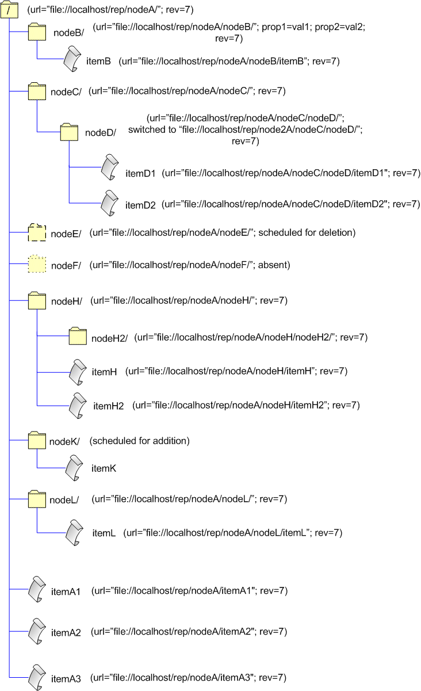

| Table of contents |
|---|
Editing Operation: receiving changes from a repository
Another field of using ISVNEditor is update operations (checkout, update, switch, export). But in update operations roles are just opposite to ones in commit operations: that is, while in a commit you obtain and use the library's editor to edit a repository, in an update you provide your own ISVNEditor implementation to the library which will be called by a repository server to transmit changes to a client side. If a remote access to a repository is used, it means that according to a particular access protocol a server sends commands which are translated by JavaSVN into calls to a client's editor.
So, a low-level update operation takes two main stages:
- a client application describes the state of the local versioned items tree to a repository;
- the infromation provided by the client is used by the server-side to decide what client items must be updated, such decisions are realized in calls to the client's editor.
In other words a client describes local revisions of the items to update, and a server traverses this tree to apply changes between what is in a repository and on the client's computer. This mechanism gives a certain freedom in choosing the format of storing local versioned tree, what means that you are not restricted by the bounds of a general Working Copy.
Reporting a local versioned tree state to a server-side
Descriptions of a local versioned tree state are made via the ISVNReporter interface. We will study how to report local revisions by the example of using the low-level layer in the high-level one, i.e. we will describe how JavaSVN reports revisions of Working Copy items using ISVNReporter.
Let's imagine we have got the following Working Copy tree:

A user performs a recursive update to the latest (HEAD) revision on the root of the Working Copy. How does JavaSVN make a report of local revisions in this case? First of all, reports are provided to an SVNRepository driver through an ISVNReporterBaton implementation. When you pass it to an update method of SVNRepository the latter one calls the baton's report() method passing it an ISVNReporter object.
Updating to the HEAD revision:
...
FSRepositoryFactory.setup();
String url = "file://localhost/rep/nodeA/";
SVNRepository repository = SVNRepositoryFactory.create(SVNURL.parseURIDecoded(url));
ReporterBaton reporterBaton = ...;
ISVNEditor editor = ...;
repository.update(-1/*forces to use the latest revision*/, null/*target*/, true/*recursive*/, reporterBaton, editor);
...
The repository driver passes an ISVNReporter object to our reporter baton's report()
method. We are interested in what calls to an ISVNReporter object our reporter baton should make to report local
revisions in our example on condition that a user calls a recursive update on the root of our Working Copy:
...
public class ReporterBaton implements ISVNReporterBaton {
...
public void report(ISVNReporter reporter) throws SVNException {
//for the WC root
reporter.setPath(""/*path*/, null/*lockToken*/, 4/*revision*/, false/*startEmpty*/);
...
Here we should stop for some important notes. The first call to ISVNReporter is always setPath("", ...),
i.e. we always start reporting with the item upon which an update is called. If target parameter of an
update method is null (like in our case) the setPath("", ...) call describes the node
corresponding to the location to which the driver is bound to (/nodeA). Otherwise if target is not null
it's a target item to update, and in this case setPath("", ...) describes this target item. Note that
target is never a path but always a name. For example, if we wanted to update only itemA1 we would
call:
repository.update(-1/*revision*/, "itemA1"/*target*/, false/*recursive*/, reporterBaton, editor);
Further we traverse our tree:
...
reporter.setPath("nodeB", null, 5, false);
...
There's no need to report /nodeA/nodeB/itemB since its current revision coincides with the revision of its parent directory and it's not locally locked. By the same reason we don't report /nodeA/itemA1, but we must report /nodeA/itemA2 - although its revision is the same as the parent's one, but the item's locally locked, so maybe in a repository the lock is broken:
...
//provide the item's lock token
String lockToken = ...;
reporter.setPath("itemA2", lockToken, 4, false);
...
Continuing our report:
...
SVNURL url = SVNURL.parseURIDecoded("file://localhost/rep/node2A/nodeC/nodeD/");
//switched paths are described in this way:
reporter.linkPath(url, "nodeC/nodeD", null/*lockToken*/, 4/*revision*/, false/*startEmpty*/);
...
Although the local revision number of /nodeC/nodeD/ coincides with the revision number of the parent we need to report it as it's switched to another location of the repository.
...
reporter.deletePath("nodeF");
reporter.deletePath("nodeG");
reporter.deletePath("nodeL");
...
nodeF is absent from our Working Copy. This means that we haven't got it previously because we don't have sufficient permissions on this directory. Furher we'll discuss how we get aware of absent directories and files when talking about editor invocations.
nodeG was locally deleted and commited in the 6-th revision, but the WC root has not been updated since then. Now imagine that someone returned that directory in revision 7 in the state it was in revision 4 . If we considered that we don't have nodeG, so we don't need to report it, we wouldn't get it back in an update to revision 7. This is because we report the WC root as in revision 4, but in revision 4 nodeG exists in the same state as in revision 7! The case of absent nodes is similar: imagine that in revision 7 permission restrictions on nodeF were broken for you, but you won't get the directory if you don't say you don't have it.
nodeL is missing from our Working Copy, i.e. it's still under version control but has been erased in the file system by a mistake. The idea is the same - we want to get the entire directory back into the Working Copy. However for a missing file (itemA3) there's no need to get the entire file since a missing file can be restored from the base (clear or unchanged) revision residing in an administrative folder (.svn) of the parent directory.
This is why it's important to report deleted and absent nodes when their local revisions are different from the parent's one as well as report missing directories.
...
reporter.setPath("nodeH", null, 4, true/*startEmpty*/);
reporter.setPath("nodeH/nodeH2", null, 4, false/*startEmpty*/);
reporter.setPath("nodeH/itemH", null, 5, false/*startEmpty*/);
...
nodeH is incomplete what means that it was not updated entirely previous time (for example, an update operation was interrupted due to network connection problems or a server breakdown). So, we report incomplete directories as empty. And also we must report all children entries in an incomplete directory, doesn't matter whether their revisions are different from the parent's revision or not.
Another case of reporting a node as being empty is a checkout operation when initially you have no entries. In this case you make a single call to a reporter:
long rev = ...;
reporter.setPath("", null, rev, true);
Well, that's all for our example Working Copy tree. Items scheduled for either addition or deletion are not reported. We are finished:
...
//called at the end of a report
reporter.finishReport();
...
}
}
If any method of ISVNReporter throws an exception you should abort the reorter in the following way:
...
try {
...
reporter.setPath(...);
...
} catch(SVNException svne) {
reporter.abortReport();
...
}
...
Receiving changes from a server-side
Now we know that when you call an update method of an SVNRepository driver, the driver first invokes you reporter baton to get a client's report of a local tree state:
...
ISVNReporter reporter = ...;
reporterBaton.report(reporter);
...
If our local tree (Working Copy, for instance) is successfully reported the diver calculates changes between our tree contents and what is in the repository. The driver passes these changes to the caller's editor as it traverses the tree. In other words, the driver edits our tree in a hierarchical way.
Let's proceed with our example. We have discussed how we should report our example Working Copy tree. Now we'll speak of how a server-side invokes our editor. First of all, it sets the actual revision which a local tree will be updated to, then opens the root node (the root of the Working Copyin in our case) and traverses the tree approximately like this:
...
//let HEAD revision be 7
editor.targetRevision(7);
//gives the source revision we provided in our report
editor.openRoot(4);
//in revision 7 properties were added for nodeB
editor.openDir("nodeB", 5);
editor.changeDirProperty("prop1", "val1");
editor.changeDirProperty("prop2", "val2");
editor.closeDir();
...
//receiving changes for a switched node - nodeD
editor.openDir("nodeC", 4);
editor.openDir("nodeC/nodeD", 4);
//itemD2 was added under /node2A/nodeC/nodeD/ in the repository
editor.addFile("nodeC/nodeD/itemD2", null, -1);
editor.applyTextDelta("nodeC/nodeD/itemD2", null);
editor.textDeltaChunk("nodeC/nodeD/itemD2", window1);
...
editor.textDeltaEnd("nodeC/nodeD/itemD2");
//text checksum
editor.closeFile("nodeC/nodeD/itemD2", checksum);
//closing nodeC/nodeD
editor.closeDir();
//closing nodeC
editor.closeDir();
...
//we are still not permitted to read /nodeA/nodeF,
//this is how a server lets us know about this
editor.absentDir("nodeF");
...
All items which are located under an incomplete directory and have got the same revision as the incomplete parent's one are ADDED once again. But those items that have got revisions different from the incomplete parent's one will rather receive differences.
editor.openDir("nodeH", 4);
editor.addDir("nodeH/nodeH2", null, -1);
//closing nodeH/nodeH2
editor.closeDir();
editor.addDir("nodeH/nodeH3", null, -1);
//closing nodeH/nodeH3
editor.closeDir();
editor.addFile("nodeH/itemH2", null, -1);
editor.applyTextDelta("nodeH/itemH2", null);
//sending delta windows
...
editor.textDeltaEnd("nodeH/itemH2");
editor.closeFile("nodeH/itemH2", checksum);
//receiving changes for nodeH/itemH
editor.openFile("nodeH/itemH", 5);
editor.applyTextDelta("nodeH/itemH", baseChecksum);
//sending delta windows
...
editor.textDeltaEnd("nodeH/itemH");
editor.closeFile("nodeH/itemH", checksum);
//closing nodeH
editor.closeDir();
...
//the lock on itemA2 was broken in the repository
editor.changeFileProperty("itemA2", SVNProperty.LOCK_TOKEN, null);
...
//receiving a missing node - /nodeA/nodeL
editor.addDir("nodeL", null, -1);
...
editor.closeDir();
...
And so forth.
...
//closes the WC root
editor.closeDir();
//finishes editing
ediotr.closeEdit();
...
The update is finished. Now our Working Copy looks like this:

This is how a local tree is traversed and applied changes coming from a repository. To a certain extent, this is only an example, a scheme. Besides versioned properties files as well as directories receive some metadata - unmanaged (by a user) properties used for version control. We don't show them in our demonstration code. Nevertheless the main idea is correct.
With a reporter (ISVNReporter) and an editor (ISVNEditor) you are not restricted by a Working Copy format. The JavaSVN high-level engine implements an editor that stores a local data tree as directories and files within a Working Copy, but you can choose a different format of saving received versioned data for your editor.
Example: exporting a repository directory
In Subversion export is like checkout except that exported directories are clean, not versioned since they don't have administrative directories. This example demonstrates usage of ISVNReporter and ISVNEditor for exporting a directory from a repository.
We implement the following reporter that reports our local tree as being empty:
public class ExportReporterBaton implements ISVNReporterBaton {
private long exportRevision;
public ExportReporterBaton(long revision){
exportRevision = revision;
}
public void report(ISVNReporter reporter) throws SVNException {
try {
reporter.setPath("", null, exportRevision, true);
reporter.finishReport();
} catch(SVNException svne) {
reporter.abortReport();
System.out.println("Report failed");
}
}
}
And the editor which performs minimal work to save a coming versioned tree as files and directories:
public class ExportEditor implements ISVNEditor {
private File myRootDirectory;
private SVNDeltaProcessor myDeltaProcessor;
public ExportEditor(File root) {
myRootDirectory = root;
/*
* Utility class that will help us to transform 'deltas' sent by the
* server to the new file contents.
*/
myDeltaProcessor = new SVNDeltaProcessor();
}
public void targetRevision(long revision) throws SVNException {
}
public void openRoot(long revision) throws SVNException {
}
public void addDir(String path, String copyFromPath, long copyFromRevision) throws SVNException {
File newDir = new File(myRootDirectory, path);
if (!newDir.exists()) {
if (!newDir.mkdirs()) {
SVNErrorMessage err = SVNErrorMessage.create(SVNErrorCode.IO_ERROR, "error: failed to add the directory ''{0}''.", newDir);
throw new SVNException(err);
}
}
System.out.println("dir added: " + path);
}
public void openDir(String path, long revision) throws SVNException {
}
public void changeDirProperty(String name, String value) throws SVNException {
}
public void addFile(String path, String copyFromPath, long copyFromRevision) throws SVNException {
File file = new File(myRootDirectory, path);
if (file.exists()) {
SVNErrorMessage err = SVNErrorMessage.create(SVNErrorCode.IO_ERROR, "error: exported file ''{0}'' already exists!", file);
throw new SVNException(err);
}
try {
file.createNewFile();
} catch (IOException e) {
SVNErrorMessage err = SVNErrorMessage.create(SVNErrorCode.IO_ERROR, "error: cannot create new file ''{0}''", file);
throw new SVNException(err);
}
}
public void openFile(String path, long revision) throws SVNException {
}
public void changeFileProperty(String path, String name, String value) throws SVNException {
}
public void applyTextDelta(String path, String baseChecksum) throws SVNException {
myDeltaProcessor.applyTextDelta(null, new File(myRootDirectory, path), false);
}
public OutputStream textDeltaChunk(String path, SVNDiffWindow diffWindow) throws SVNException {
return myDeltaProcessor.textDeltaChunk(diffWindow);
}
public void textDeltaEnd(String path) throws SVNException {
myDeltaProcessor.textDeltaEnd();
}
public void closeFile(String path, String textChecksum) throws SVNException {
System.out.println("file added: " + path);
}
public void closeDir() throws SVNException {
}
public void deleteEntry(String path, long revision) throws SVNException {
}
public void absentDir(String path) throws SVNException {
}
public void absentFile(String path) throws SVNException {
}
public SVNCommitInfo closeEdit() throws SVNException {
return null;
}
public void abortEdit() throws SVNException {
}
}
Having got these two implementations we export a directory from a world-readable repository:
public class Export {
public static void main(String[] args) {
DAVRepositoryFactory.setup();
SVNURL url = SVNURL.parseURIEncoded("http://svn.tmate.org/svn/jsvn/trunk/doc");
String userName = "foo";
String userPassword = "bar";
//Prepare filesystem directory (export destination).
File exportDir = new File("export");
if (exportDir.exists()) {
SVNErrorMessage err = SVNErrorMessage.create(SVNErrorCode.IO_ERROR, "Path ''{0}'' already exists", exportDir);
throw new SVNException(err);
}
exportDir.mkdirs();
SVNRepository repository = SVNRepositoryFactory.create(url);
ISVNAuthenticationManager authManager = SVNWCUtil.createDefaultAuthenticationManager(userName, userPassword);
repository.setAuthenticationManager(authManager);
SVNNodeKind nodeKind = repository.checkPath("", -1);
if (nodeKind == SVNNodeKind.NONE) {
SVNErrorMessage err = SVNErrorMessage.create(SVNErrorCode.UNKNOWN, "No entry at URL ''{0}''", url);
throw new SVNException(err);
} else if (nodeKind == SVNNodeKind.FILE) {
SVNErrorMessage err = SVNErrorMessage.create(SVNErrorCode.UNKNOWN, "Entry at URL ''{0}'' is a file while directory was expected", url);
throw new SVNException(err);
}
//Get latest repository revision. We will export repository contents at this very revision.
long latestRevision = repository.getLatestRevision();
ISVNReporterBaton reporterBaton = new ExportReporterBaton(latestRevision);
ISVNEditor exportEditor = new ExportEditor(exportDir);
/*
* Now ask JavaSVN to perform generic 'update' operation using our reporter and editor.
*
* We are passing:
*
* - revision from which we would like to export
* - null as "target" name, to perform export from the URL SVNRepository was created for,
* not from some child directory.
* - reporterBaton
* - exportEditor.
*/
repository.update(latestRevision, null, true, reporterBaton, exportEditor);
System.out.println("Exported revision: " + latestRevision);
}
}
Download the example program source code.